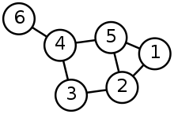
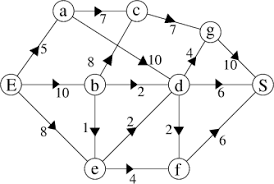

pdf : pour impression
Définitions
Définition : Graphe simple

Un graphe simple est un couple $G = (V, E)$ comprenant
-
$V$ un ensemble de sommets (parfois appelés nœuds),
-
$E$ un ensemble d'arêtes reliant ces sommets (parfois appelés arcs ou flèches).
Une arrête est simplement un couple de sommets ou un ensemble de deux sommets.
Les termes et notations anglais, que vous rencontrerez souvent sont : sommet : vertice et arête : edge. D’où les noms des ensembles.
Exemple
Dans le graphe ci-dessus
- Les sommets sont : $V = {1, 2, 3, 4, 5, 6}$
- Les arrêtes sont : $E = { {1, 2}, {1, 5}, {2, 3}, {2, 5}, {3, 4}, {3, 5}, {4, 5}, {5, 6}}$
Définition : Graphe orienté
Lorsque les arêtes sont marquées d’une flèche, elles sont orientées.
Une arrête orientée ne se parcourt que dans le sens de la flèche. Dans ce cas on note généralement les arrêtes avec des parenthèses pour désigner des couples.
Par exemple l’arête $(1, 2)$ part de $1$ et arrive en $2$.
Si c’est un réseau de transport, on peut se rendre de 1 vers 2, mais pas dans l’autre sens.
Définition : Graphe pondéré
Dans certains cas, toutes les arêtes ne se valent pas. (Un trajet Lille-Paris ne “coûte” pas autant qu’un “Paris-Lyon”.)
Dans ce cas on attribue aux arrêtes un poids, souvent noté w (pour weight).
{width=40%}\
Ici l'arête $(E, b)$ a un poids de 10.
Et le trajet $(E, b, d, S)$ pèse $10+2+6 = 18$
Structure de donnée graphe
Introduction
De quoi a-t-on besoin de pour décrire des graphes ?
De toute évidence, il nous faut pouvoir représenter
- les sommets,
- les arrêtes.
Lors de notre représentation des arbres binaires nous avions choisi de ne considérer que les nœuds et nous avions essentiellement une structure sous forme de triplet :
arbre = (contenu, sous_arbre_gauche, sous_arbre_droit)
Cela ne fonctionne plus ici, il n’y a généralement pas de sommet privilégié dans un graphe… Tous les nœuds jouent le même rôle.
Il faut donc envisager un moyen de représenter l’ensemble des sommets et l’ensemble des arrêtes.
Les sommets d’un graphe peuvent être enregistrés dans n’importe quelle “collection” :
- liste,
- tuples,
- dictionnaires,
- ensemble
etc.
Pour les arêtes, c’est différent.
Il existe plusieurs manières de les décrire et toutes ont leur utilité. Nous devons apprendre à passer de l’une à l’autre.
Ensemble d’arêtes
La méthode la plus simple et la plus courante pour décrire les arêtes est d’en donner une collection. En mathématiques un ensemble, en informatique, n’importe quelle structure sur laquelle itérer.
Par exemple : $G = (V, E)$ avec $V = {1, 2, 3, 4}$ et $E = {(1, 2), (2, 3), (3, 4), (2, 4)}$
Remarque : Guido Von Rossum (créateur de Python) préconise d’utiliser un dictionnaire.
Pour le graphe précédent :
aretes = {
1: [2],
2: [1, 3, 4],
3: [2, 4],
4: [3, 2],
}
Matrice d’adjacence
Il est courant et souvent pratique de représenter les arêtes dans une matrice.
Définition :
Pour un graphe simple $G = (V, E)$ avec $n$ sommets, la matrice d’adjacence de $G$ est une matrice de dimension $n \times n$ dont l’élément $a_{ij}$ est 1 si les sommets $i$ et $j$ sont reliés par une arrête et 0 sinon.
Cette définition, simplifiée, ne s’applique qu’aux graphes simples
Exemple :
Dans l’exemple du graphe ci-dessus, cela donne :
$$
\begin{pmatrix}
0 & 1 & 0 & 0\
1 & 0 & 1 & 1\
0 & 1 & 0 & 1\
0 & 1 & 1 & 0
\end{pmatrix}
$$
Comment remplir la première ligne ?
- 1 n’est pas relié à 1 donc le premier nombre est 0.
- 1 est relié à 2 donc le second nombre est 1.
- 1 n’est pas relié à 3, le troisième nombre est 0.
- 1 n’est pas relié à 4, le quatrième nombre est 0.
On obtient bien la première ligne : $0\quad 1\quad 0\quad 0$.
Lorsque les sommets sont numérotés, il est naturel de choisir l’ordre correspondant, mais lorsque les sommets portent des noms (“Lille”, “Paris”, “Marseille”), l’ordre peut varier. On obtient alors une autre matrice d’adjacence qui lui est équivalente.
De la matrice d’adjacence à la représentation
Partant d’une matrice d’adjacence comme
$$
\begin{pmatrix}
0 & 1 & 1 & 1 & 0\
1 & 0 & 1 & 1 & 1\
1 & 1 & 0 & 1 & 0\
1 & 1 & 1 & 0 & 1\
0 & 1 & 0 & 1 & 0\
\end{pmatrix}
$$
Il existe un unique graphe qu’elle représente :
Remarque : attention cependant, si on change l’ordre des sommets on obtient une autre matrice d’adjacence ! La matrice d’adjacence est unique à l’ordre près des sommets.
Cas des graphes orientés
Lorsque les graphes sont orientés on doit tenir compte de l’ordre.
Définition :
Dans le cas d’un graphe orienté, la matrice d’adjacence contient 1 à la ligne $i$, colonne $j$ s’il existe une arrête reliant le sommet $i$ au sommet $j$.
-
Les lignes donnent les points de départ. La deuxième ligne de la matrice d’adjacence contient 1 pour chaque arête qui part de 2.
-
Les colonnes donnent les points d'arrivée. La deuxième colonne de la matrice d’adjacence contient 1 pour chaque arête qui arrive en 2.
$$
\begin{pmatrix}
0 & 1 & 1 & 0\
0 & 0 & 0 & 1\
1 & 0 & 1 & 0\
0 & 0 & 1 & 0
\end{pmatrix}
$$
Le graphe ci-dessus présente une boucle $3 \rightarrow 3$. Dans sa matrice d’adjacence on peut le voir parce qu’il y a un 1 sur la diagonale en $a_{3, 3}$
Application de la matrice d’adjacence
Si $A$ est la matrice d’adjacence d’un graphe alors:
$a_{i,j} = 1 \Longleftrightarrow \text{Il existe un arc de } i \text{ vers } j$.
Lorsqu’on apporte aux matrices une opération supplémentaire, le produit, on obtient le résultat suivant :
Théorème:
Le nombre de parcours de longueur exactement $k$ allant de $i$ à $j$ est le coefficient en position $(i, j)$ de la matrice $A^k$.
Exemple :
Pour le graphe précédent dont la matrice $A$ est :
$$A = \begin{pmatrix}
0 & 1 & 1 & 0\
0 & 0 & 0 & 1\
1 & 0 & 1 & 0\
0 & 0 & 1 & 0
\end{pmatrix}
$$
On a $A^3 = \begin{pmatrix}
1 & 1 & 3 & 0 \
0 & 0 & 1 & 0 \
2 & 1 & 3 & 1 \
1 & 1 & 2 & 0
\end{pmatrix}$ aussi :
- Il n’existe aucun chemin de longueur exactement trois reliant 1 à 1,
- il existe exactement un chemin de longueur 3 reliant 1 à 3 : $(1, 2, 4, 3)$.
etc.
Malheureusement, les opérations sur les matrices ne sont pas au programme de NSI et nous n’aurons pas l’occasion d’approfondir le sujet.
Structure de donnée graphe
Pour travailler avec les graphes nous allons avoir besoin d’une structure de
donnée. Contrairement aux arbres, représentés depuis leur sommet,
nous allons créer un objet Graphe qui devra respecter certaines propriétés.
Primitives
Quelles sont les primitives dont nous avons besoin pour créer un graphe ?
- créer un graphe (vide ou à partir d’une liste de sommets),
- ajouter un sommet,
- ajouter une arête,
- supprimer un sommet,
- supprimer une arête,
- le graphe est-il vide ?
- quels sont les sommets adjacents à un sommet donné ?
On peut aussi envisager :
- retourner la matrice d’adjacence d’un graphe,
- créer un graphe à partir d’une matrice d’adjacence.
- créer un graphe à partir de la liste de ses sommets (souvent appelée liste d’adjacence)
De nombreuses interfaces sont envisagéables. Certaines fonctionnent directement à partir des arêtes et créent les sommets dont elles ont besoin.
Les applications étant innombrables, pourra ajouter :
- fixer une valeur à une arête,
- retourner la valeur d’une arête,
ou
- fixer une valeur à un sommet,
- retourner la valeur d’un sommet.
Exemple
Pour le cas d’un graphe orienté, sans valeurs pour les sommets ni les arêtes, on peut illustrer :
>>> g = creer_graphe()
>>> g.est_vide()
True
>>> g.ajouter_sommet(1)
>>> g.est_vide()
False
>>> g.ajouter_sommet(2)
>>> g.ajouter_arete((1, 2)) # de 1 vers 2
>>> g.ajouter_arete((1, 3))
>>> g.ajouter_arete((3, 1)) # de 3 vers 1
>>> g.ajouter_arete((3, 2))
>>> g.voisins(1) # sommets qui accessibles depuis 1
[3, 2]
>>> g.voisins(2)
None
>>> g.matrice_adjacence()
[[0, 1, 1],
[0, 0, 0],
[1, 1, 0]]
Ce graphe est alors :
Objectifs ultérieurs
- TD Maîtriser les notions, le vocabulaires, découvrir quelques algorithmes,
- TP Prendre en main
networkxet tester les fonctionnalités intégrées, - TD Parcourir un graphe, résoudre un problème,
- TP Implémenter les parcours de graphe, résoudre des problèmes,
- TP Implémenter une structure de graphe,
- TP Recherche de cycle.